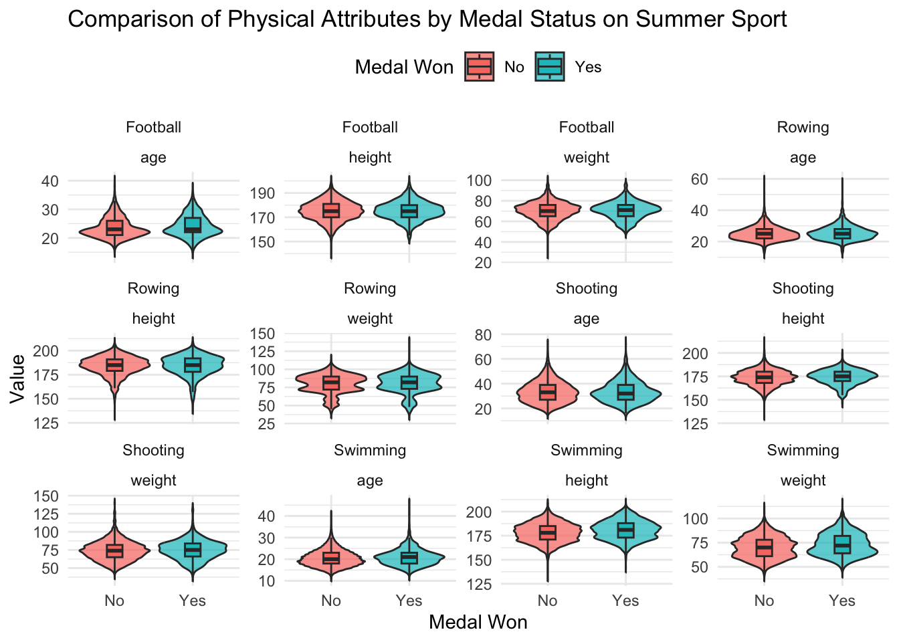
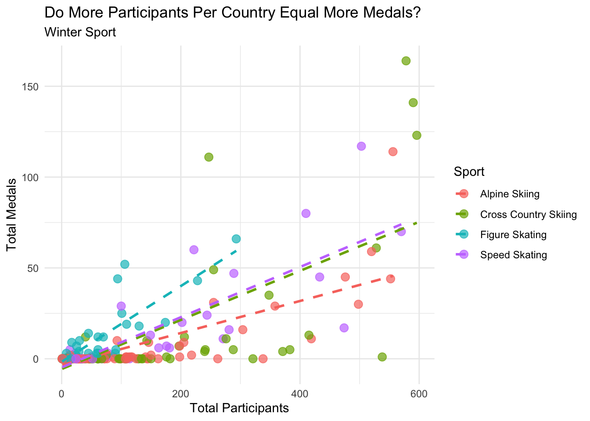

The Olympics is one of the greatest global sporting events, celebrating athleticism and showcasing incredible human feats. However, at its core, the Olympics is truly a competition, with audiences worldwide closely following medal counts and rooting for gold. What variables, such as country or weight, influence success in the Olympics? In this report, we analyze the factors that correlate with earning medals in eight different sports: Football, Swimming, Shooting, Rowing, Alpine Skiing, Cross-Country Skiing, Speed Skating, and Figure Skating.
2. Methodology
2.1 Data Cleaning and Preparation
Removed missing values in key attributes such as age, height, weight, and medals.
Filtered data
Created new variables:
medal_won: Indicates if an athlete won a medal (Yes/No).
repeat_participation: Captures repeated appearances by athletes.
2.2 Analysis Approach
Physical Attributes: Compared average age, height, and weight of medalists vs non-medalists.
Experience: Evaluated the role of age and repeated participation in medal success.
Country Dominance: Analyzed which countries are top performers in each sport.
Sport Comparisons: Highlighted differences and similarities between sports
3. Results
3.1 Dataset overview
Findings:Top 10 sports, more participants in summer than winter.
Visualization:
Rows: 271116 Columns: 15
── Column specification ────────────────────────────────────────────────────────
Delimiter: ","
chr (10): name, sex, team, noc, games, season, city, sport, event, medal
dbl (5): id, age, height, weight, year
ℹ Use `spec()` to retrieve the full column specification for this data.
ℹ Specify the column types or set `show_col_types = FALSE` to quiet this message.
── Attaching core tidyverse packages ──────────────────────── tidyverse 2.0.0 ──
✔ dplyr 1.1.4 ✔ readr 2.1.5
✔ forcats 1.0.0 ✔ stringr 1.5.1
✔ ggplot2 3.5.1 ✔ tibble 3.2.1
✔ lubridate 1.9.3 ✔ tidyr 1.3.1
✔ purrr 1.0.2
── Conflicts ────────────────────────────────────────── tidyverse_conflicts() ──
✖ dplyr::filter() masks stats::filter()
✖ dplyr::lag() masks stats::lag()
ℹ Use the conflicted package (<http://conflicted.r-lib.org/>) to force all conflicts to become errors
# A tibble: 66 × 2
sport participants
<chr> <int>
1 Athletics 38624
2 Gymnastics 26707
3 Swimming 23195
4 Shooting 11448
5 Cycling 10859
6 Fencing 10735
7 Rowing 10595
8 Cross Country Skiing 9133
9 Alpine Skiing 8829
10 Wrestling 7154
# ℹ 56 more rows
Warning: Using `size` aesthetic for lines was deprecated in ggplot2 3.4.0.
ℹ Please use `linewidth` instead.
3.2 Impact of Sex
Findings:Males participant are older, heigher,and heavier than female. A slight different trend detected in football and rowing.
Visualization
Winter
Summer
3.3 Participation Over Years
Findings:Males participant are older, heigher,and heavier than female. A slight different trend detected in footb
Visualization:
# A tibble: 111 × 3
sport year participation
<chr> <dbl> <int>
1 Shooting 1896 65
2 Swimming 1896 18
3 Football 1900 35
4 Rowing 1900 133
5 Shooting 1900 221
6 Swimming 1900 131
7 Football 1904 36
8 Rowing 1904 46
9 Swimming 1904 64
10 Football 1906 45
# ℹ 101 more rows
3.4 Correlation Between Medal Wins and Physical Attributes
Findings:
Visualization:
Warning: Removed 11829 rows containing non-finite outside the scale range
(`stat_ydensity()`).
Warning: Removed 11829 rows containing non-finite outside the scale range
(`stat_boxplot()`).
Warning: Removed 28256 rows containing non-finite outside the scale range
(`stat_ydensity()`).
Warning: Removed 28256 rows containing non-finite outside the scale range
(`stat_boxplot()`).

3.5 Top countries
Findings:
Visualization:
3.6 Medals vs Participant
Findings:
Visualization:
`geom_smooth()` using formula = 'y ~ x'
`geom_smooth()` using formula = 'y ~ x'

4. Analysis
Findings: The more participants a country has the more medals they will likely win. Different sports require different characteristics for success. The average height of football players who won medals was around 173 cm, the average weight was around 76 kg, and they were on average 23 years old. The average height of rowers who won medals was around 180 cm, the average weight was around 78 kg, and they were on average around 25 years old. The average height of shooting athletes who won medals was around 175 cm, the average weight was around 76 kg, and on average around 36 years old. The average height of swimmers who won medals was around 179 cm, the average weight was around 72 kg, and on average around 22 years old. The average height of alpine skiers who won medals was around 170 cm, the average weight was around 68 kg, and on average around 24 years old. The average height of cross country skiers who won medals was around 175 cm, the average weight was around 63 kg, and on average around 28 years old. The average height of figure skaters who won medals was around 167 cm, the average weight was around 59 kg, and on average around 23 years old. The average height of speed skaters who won medals was around 178 cm, the average weight was around 72 kg, and on average around 25 years old.
Limitations:Due to time, the summer sport and winter sport is not a strong representation since we only have four each.
5. Conclusion
Summer: The analysis of summer sports highlights swimming as the sport with the highest number of participants and a consistent upward trend in participation over time. Countries like the USA dominate summer sports both in terms of athlete participation and medals won. While sports like rowing and shooting show steady but moderate growth, football participation is more regionally concentrated, reflecting its varied popularity worldwide.
Winter: Winter sports participation demonstrates a more diverse pattern, with Alpine Skiing and Cross-Country Skiing being prominent. Nations like Norway, Canada, and the USA excel, can be caused by their geographic advantages. Medal success in winter sports shows a loose correlation with participation. While the participation trends indicate a steady increase in global representation, although the growth remains slower compared to summer sports.
Overall: Both summer and winter sports reflect a growing trend in global participation. While summer sports demonstrate higher participation overall, winter sports exhibit technical specialization and geographic concentration. Medal success is partially tied to participation rates, as factors like investment, infrastructure, and athlete development programs significantly influence outcomes.
6. Recommendations
For Athletes: Tailor training regimens based on the physical and experiential needs of each sport.
For Countries: Invest in infrastructure and coaching programs to support elite-level performance.
For Further Analysis: Integrate data on training, funding, and external conditions to refine predictive models for success.
Source Code
# Report {.unnumbered}------------------------------------------------------------------------## **Chasing Medals****Analysis of Olympic Data**------------------------------------------------------------------------## **1. Introduction**The Olympics is one of the greatest global sporting events, celebrating athleticism and showcasing incredible human feats. However, at its core, the Olympics is truly a competition, with audiences worldwide closely following medal counts and rooting for gold. What variables, such as country or weight, influence success in the Olympics? In this report, we analyze the factors that correlate with earning medals in eight different sports: Football, Swimming, Shooting, Rowing, Alpine Skiing, Cross-Country Skiing, Speed Skating, and Figure Skating.------------------------------------------------------------------------## **2. Methodology**### **2.1 Data Cleaning and Preparation**- Removed missing values in key attributes such as age, height, weight, and medals.- Filtered data- Created new variables: - `medal_won`: Indicates if an athlete won a medal (Yes/No). - `repeat_participation`: Captures repeated appearances by athletes.### **2.2 Analysis Approach**- **Physical Attributes**: Compared average age, height, and weight of medalists vs non-medalists.- **Experience**: Evaluated the role of age and repeated participation in medal success.- **Country Dominance**: Analyzed which countries are top performers in each sport.- **Sport Comparisons**: Highlighted differences and similarities between sports------------------------------------------------------------------------## **3. Results**### **3.1 Dataset overview**- **Findings**:Top 10 sports, more participants in summer than winter.- **Visualization**:```{r echo=FALSE}olympics <- readr::read_csv('https://raw.githubusercontent.com/rfordatascience/tidytuesday/master/data/2024/2024-08-06/olympics.csv')library(tidyverse)library(ggplot2)library(dplyr)library(tidyr)# Count number of participants in each sportsport_distribution <- olympics |> group_by(sport) |> summarise(participants = n(), .groups = 'drop') |> arrange(desc(participants))sport_distribution# Plot distribution of top 10 sportssport_distribution |> slice_max(participants, n = 10) |> ggplot(aes(x = reorder(sport, participants), y = participants)) + geom_bar(stat = "identity", fill = "steelblue") + coord_flip() + labs( title = "Top 10 Sports by Number of Participants", x = "Sport", y = "Number of Participants" ) + theme_minimal()``````{r echo=FALSE}# Count number of participants per yearparticipation_trends <- olympics |> group_by(year) |> summarise(participants = n(), .groups = 'drop')participation_trends# Plot participation over timeparticipation_trends |> ggplot(aes(x = year, y = participants)) + geom_line(color = "darkorange", size = 1) + geom_point(color = "darkred") + labs( title = "Participation Trends Over Time", x = "Year", y = "Number of Participants" ) + theme_minimal()```### **3.2 Impact of Sex**- **Findings**:Males participant are older, heigher,and heavier than female. A slight different trend detected in football and rowing.- **Visualization**## Winter```{r echo=FALSE}athlete_trends <- olympics |> filter(sport %in% c("Cross Country Skiing", "Alpine Skiing","Figure Skating","Speed Skating")) |> group_by(sport, sex) |> summarize( avg_age = mean(age, na.rm = TRUE), avg_height = mean(height, na.rm = TRUE), avg_weight = mean(weight, na.rm = TRUE), .groups = 'drop' )athlete_trends |> pivot_longer(cols = c(avg_age, avg_height, avg_weight), names_to = "attribute", values_to = "value") |> ggplot(aes(x = sport, y = value, fill = sex)) + geom_bar(stat = "identity", position = "dodge") + facet_wrap(~attribute, scales = "free_y") + labs( title = "Trends in Athlete Characteristics by Winter Sport and Sex", x = "Sport", y = "Average Value", fill = "Sex" ) + theme_minimal()```## Summer```{r echo=FALSE}athlete_trends <- olympics |> filter(sport %in% c("Shooting", "Rowing","Swimming","Football")) |> group_by(sport, sex) |> summarize( avg_age = mean(age, na.rm = TRUE), avg_height = mean(height, na.rm = TRUE), avg_weight = mean(weight, na.rm = TRUE), .groups = 'drop' )athlete_trends |> pivot_longer(cols = c(avg_age, avg_height, avg_weight), names_to = "attribute", values_to = "value") |> ggplot(aes(x = sport, y = value, fill = sex)) + geom_bar(stat = "identity", position = "dodge") + facet_wrap(~attribute, scales = "free_y") + labs( title = "Trends in Athlete Characteristics by Winter Sport and Sex", x = "Sport", y = "Average Value", fill = "Sex" ) + theme_minimal()```### **3.3 Participation Over Years**- **Findings**:Males participant are older, heigher,and heavier than female. A slight different trend detected in footb- **Visualization**:```{r echo=FALSE}yearly_trends <- olympics |> filter(sport %in% c("Cross Country Skiing", "Alpine Skiing","Figure Skating","Speed Skating")) |> group_by(sport, year) |> summarize(participation = n(), .groups = 'drop') |> arrange(year)yearly_trends |> ggplot(aes(x = year, y = participation, color = sport, group = sport)) + geom_line(size = 1) + geom_point() + labs( title = "Participation Over the Years in Winter Sports", x = "Year", y = "Number of Athletes", color = "Sport" ) + theme_minimal()``````{r echo=FALSE}yearly_trends <- olympics |> filter(sport %in% c("Shooting", "Rowing","Swimming","Football")) |> group_by(sport, year) |> summarize(participation = n(), .groups = 'drop') |> arrange(year)yearly_trendsyearly_trends |> ggplot(aes(x = year, y = participation, color = sport, group = sport)) + geom_line(size = 1) + geom_point() + labs( title = "Participation Over the Years in Summer Sports", x = "Year", y = "Number of Athletes", color = "Sport" ) + theme_minimal()```### **3.4 Correlation Between Medal Wins and Physical Attributes**- **Findings**:- **Visualization**:```{r echo=FALSE}# Pivot the data for visualizationmedal_data_long <- olympics |> filter(sport %in% c("Cross Country Skiing", "Alpine Skiing","Figure Skating","Speed Skating")) |> mutate(medal_won = ifelse(is.na(medal), "No", "Yes")) |> select(sport, medal_won, age, height, weight) |> pivot_longer(cols = c(age, height, weight), names_to = "attribute", values_to = "value")# Combined violin and box plotmedal_data_long |> ggplot(aes(x = medal_won, y = value, fill = medal_won)) + geom_violin(alpha = 0.7, trim = FALSE) + # Violin plot for distribution geom_boxplot(width = 0.2, alpha = 0.9, outlier.shape = NA) + facet_wrap(~sport + attribute, scales = "free_y") + labs( title = "Comparison of Physical Attributes by Medal Status on Winter Sport", x = "Medal Won", y = "Value", fill = "Medal Won" ) + theme_minimal() + theme(legend.position = "top") ``````{r echo=FALSE}# Pivot the data for visualizationmedal_data_long <- olympics |> filter(sport %in% c("Shooting", "Rowing","Swimming","Football")) |> mutate(medal_won = ifelse(is.na(medal), "No", "Yes")) |> select(sport, medal_won, age, height, weight) |> pivot_longer(cols = c(age, height, weight), names_to = "attribute", values_to = "value")# Combined violin and box plotmedal_data_long |> ggplot(aes(x = medal_won, y = value, fill = medal_won)) + geom_violin(alpha = 0.7, trim = FALSE) + # Violin plot for distribution geom_boxplot(width = 0.2, alpha = 0.9, outlier.shape = NA) + facet_wrap(~sport + attribute, scales = "free_y") + labs( title = "Comparison of Physical Attributes by Medal Status on Summer Sport", x = "Medal Won", y = "Value", fill = "Medal Won" ) + theme_minimal() + theme(legend.position = "top")```### **3.5 Top countries **- **Findings**:- **Visualization**:```{r echo=FALSE}# Calculate total participation for top 10 countriestop_10_countries <- olympics |> filter(sport %in% c("Cross Country Skiing", "Alpine Skiing", "Figure Skating", "Speed Skating")) |> group_by(noc) |> summarize(total_participation = n(), .groups = 'drop') |> arrange(desc(total_participation)) |> slice_max(total_participation, n = 10)# Filter data for the top 10 countriestop_countries_all_sports <- olympics |> filter( sport %in% c("Cross Country Skiing", "Alpine Skiing", "Figure Skating", "Speed Skating"), noc %in% top_10_countries$noc ) |> group_by(noc, sport) |> summarize(participation = n(), .groups = 'drop')# Plot participation across all four sports for the top 10 countriestop_countries_all_sports |> ggplot(aes(x = reorder(noc, -participation), y = participation, fill = sport)) + geom_bar(stat = "identity", position = "stack") + coord_flip() + labs( title = "Top 10 Countries by Participation in Winter Sports", x = "Country (NOC)", y = "Number of Athletes", fill = "Sport" ) + theme_minimal()``````{r echo=FALSE}# Calculate total participation for top 10 countriestop_10_countries <- olympics |> filter(sport %in% c("Shooting", "Rowing","Swimming","Football")) |> group_by(noc) |> summarize(total_participation = n(), .groups = 'drop') |> arrange(desc(total_participation)) |> slice_max(total_participation, n = 10)# Filter data for the top 10 countriestop_countries_all_sports <- olympics |> filter( sport %in% c("Shooting", "Rowing","Swimming","Football"), noc %in% top_10_countries$noc ) |> group_by(noc, sport) |> summarize(participation = n(), .groups = 'drop')# Plot participation across all four sports for the top 10 countriestop_countries_all_sports |> ggplot(aes(x = reorder(noc, -participation), y = participation, fill = sport)) + geom_bar(stat = "identity", position = "stack") + coord_flip() + labs( title = "Top 10 Countries by Participation in Summer Sports", x = "Country (NOC)", y = "Number of Athletes", fill = "Sport" ) + theme_minimal()``````{r echo=FALSE}# Filter data for medal-winning athletesmedal_data <- olympics |> filter(!is.na(medal)) |> group_by(noc, medal) |> summarize(medals = n(), .groups = 'drop')# Identify the top 10 countries by total medalstop_10_medal_countries <- medal_data |> group_by(noc) |> summarize(total_medals = sum(medals), .groups = 'drop') |> arrange(desc(total_medals)) |> slice_max(total_medals, n = 10)# Filter medal data for the top 10 countriesmedal_data_top10 <- medal_data |> filter(noc %in% top_10_medal_countries$noc)# Add total medals for sortingmedal_data_top10 <- medal_data_top10 |> group_by(noc) |> mutate(total_medals = sum(medals)) |> ungroup()# Create a stacked bar chart for medal distributionmedal_data_top10 |> ggplot(aes(x = reorder(noc, -total_medals), y = medals, fill = medal)) + geom_bar(stat = "identity", position = "stack") + coord_flip() + labs( title = "Top 10 Countries by Medals Won", x = "Country (NOC)", y = "Number of Medals", fill = "Medal Type" ) + theme_minimal()```### **3.6 Medals vs Participant **- **Findings**:- **Visualization**:```{r echo=FALSE}# Summarize data for participants and medals per countryparticipants_vs_medals <- olympics |> filter(sport %in% c("Shooting", "Rowing","Swimming","Football")) |> group_by(noc, sport) |> summarize( total_participants = n(), total_medals = sum(!is.na(medal)), # Count non-NA medals .groups = 'drop' )participants_vs_medals |> ggplot(aes(x = total_participants, y = total_medals, color = sport)) + geom_point(size = 3, alpha = 0.7) + geom_smooth(method = "lm", se = FALSE, linetype = "dashed") + # Add trend lines labs( title = "Do More Participants Per Country Equal More Medals?", subtitle = "Analysis Summer Sport", x = "Total Participants", y = "Total Medals", color = "Sport" ) + theme_minimal()``````{r echo=FALSE}participants_vs_medals <- olympics |> filter(sport %in% c("Cross Country Skiing", "Alpine Skiing", "Figure Skating", "Speed Skating")) |> group_by(noc, sport) |> summarize( total_participants = n(), total_medals = sum(!is.na(medal)), # Count non-NA medals .groups = 'drop' )participants_vs_medals |> ggplot(aes(x = total_participants, y = total_medals, color = sport)) + geom_point(size = 3, alpha = 0.7) + geom_smooth(method = "lm", se = FALSE, linetype = "dashed") + # Add trend lines labs( title = "Do More Participants Per Country Equal More Medals?", subtitle = "Winter Sport", x = "Total Participants", y = "Total Medals", color = "Sport" ) + theme_minimal()```------------------------------------------------------------------------## **4. Analysis**- **Findings**: The more participants a country has the more medals they will likely win. Different sports require different characteristics for success. The average height of football players who won medals was around 173 cm, the average weight was around 76 kg, and they were on average 23 years old. The average height of rowers who won medals was around 180 cm, the average weight was around 78 kg, and they were on average around 25 years old. The average height of shooting athletes who won medals was around 175 cm, the average weight was around 76 kg, and on average around 36 years old. The average height of swimmers who won medals was around 179 cm, the average weight was around 72 kg, and on average around 22 years old. The average height of alpine skiers who won medals was around 170 cm, the average weight was around 68 kg, and on average around 24 years old. The average height of cross country skiers who won medals was around 175 cm, the average weight was around 63 kg, and on average around 28 years old. The average height of figure skaters who won medals was around 167 cm, the average weight was around 59 kg, and on average around 23 years old. The average height of speed skaters who won medals was around 178 cm, the average weight was around 72 kg, and on average around 25 years old. - **Limitations**:Due to time, the summer sport and winter sport is not a strong representation since we only have four each. ------------------------------------------------------------------------## **5. Conclusion**Summer:The analysis of summer sports highlights swimming as the sport with the highest number of participants and a consistent upward trend in participation over time. Countries like the USA dominate summer sports both in terms of athlete participation and medals won. While sports like rowing and shooting show steady but moderate growth, football participation is more regionally concentrated, reflecting its varied popularity worldwide.Winter:Winter sports participation demonstrates a more diverse pattern, with Alpine Skiing and Cross-Country Skiing being prominent. Nations like Norway, Canada, and the USA excel, can be caused by their geographic advantages. Medal success in winter sports shows a loose correlation with participation. While the participation trends indicate a steady increase in global representation, although the growth remains slower compared to summer sports.Overall: Both summer and winter sports reflect a growing trend in global participation. While summer sports demonstrate higher participation overall, winter sports exhibit technical specialization and geographic concentration. Medal success is partially tied to participation rates, as factors like investment, infrastructure, and athlete development programs significantly influence outcomes. ------------------------------------------------------------------------## **6. Recommendations**1. **For Athletes**: Tailor training regimens based on the physical and experiential needs of each sport.2. **For Countries**: Invest in infrastructure and coaching programs to support elite-level performance.3. **For Further Analysis**: Integrate data on training, funding, and external conditions to refine predictive models for success.------------------------------------------------------------------------